Безинъекционное и безаппаратное омоложение лица
Авторская методика массажа «Архитектура лица» — 30 минут, три зоны: лицо, шея, декольте. Работаю руками: без уколов, препаратов и аппаратов. Результат нарастает естественно и держится долго.
- 30+
- лет в медицине
- 16
- лет в косметологии
- 30
- минут сеанс
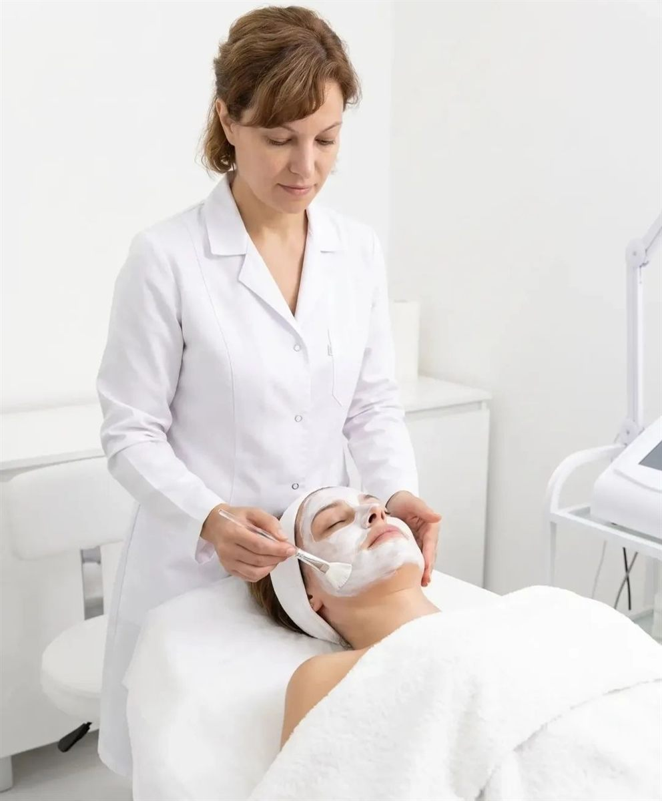
Диденко Татьяна Викторовна
Косметолог-эстетист с медицинским образованием. В медицине с 1994 года, в косметологии и массаже — с 2009 года. Работаю с лицом, шеей и декольте.
Мой подход простой: сначала понять, что происходит с кожей и мышцами, и только потом браться за работу. Поэтому первый визит всегда начинается с разговора — что беспокоит, какие процедуры вы уже пробовали, есть ли противопоказания. И уже после этого я подбираю протокол.
«Архитектура лица» — это авторская методика, в которой я соединила медицинские знания о лимфотоке и мышцах лица с двадцатью годами практики. Никаких уколов и аппаратов: только руки, понимание анатомии и регулярность.
«Архитектура лица»
Авторский массаж, 30 минут, три зоны: лицо, шея, декольте
Что вы получите
- Тонус и тургор кожи
- Выраженный стойкий лифтинг
- Улучшение крово- и лимфообращения
- Устранение застоев и отёков
- Работа с двойным подбородком и брылями
- Снятие зажимов и спазмов мышц
- Улучшение цвета лица
- Глубокое увлажнение тканей
- Активная стимуляция выработки коллагена
- Видимое уменьшение морщин — в ширину, глубину и длину
- Открытый взгляд
- Тонус кожи век, лица, шеи и декольте
Почему без инъекций и аппаратов
Массаж воздействует на мышцы, лимфоток и микроциркуляцию руками мастера. Это значит: нет препаратов и аллергических реакций, нет уколов и синяков, нет реабилитации — после сеанса можно сразу вернуться к делам.
Результат нарастает постепенно, поэтому лицо выглядит естественно: не «сделанным», а отдохнувшим и посвежевшим.
Посмотреть ценыСтоимость
Первая встреча — пробный сеанс. Он нужен, чтобы познакомиться, оценить состояние кожи и понять, подходит ли вам методика.
Пробный сеанс
Знакомство, диагностика и полноценный массаж всех трёх зон
30 минут · лицо, шея, декольте
ЗаписатьсяСеанс массажа
Продолжение работы по индивидуальному протоколу
30 минут · лицо, шея, декольте
ЗаписатьсяКак лучше ходить
Разовый сеанс даёт свежесть на несколько дней. Чтобы результат закрепился, нужен курс — от 5 сеансов, чаще всего 8–12. Периодичность подбираем индивидуально: от одного раза в неделю до 3–4 раз, в зависимости от задачи и состояния кожи.
На первом визите мы вместе решим, какой ритм подойдёт именно вам. Навязывать курс я не буду: если достаточно редких визитов — так и скажу.
От первого звонка до результата
Заявка
Вы звоните или оставляете заявку. Договариваемся об удобном времени.
Знакомство
Смотрим состояние кожи и мышц, обсуждаем, что беспокоит и какие есть противопоказания.
Массаж
30 минут работы по трём зонам. Техника подбирается под вашу кожу и задачу.
Домашний уход
Рассказываю, что делать между визитами, чтобы результат держался дольше.
Документы и квалификация
Медицинское образование и регулярное повышение квалификации. Нажмите на документ, чтобы рассмотреть.
Медицина
- Диплом медицинской сестры — Московское медицинское училище № 3, 1994 год, специальность «сестринское дело», квалификация «медицинская сестра». Регистрационный номер 1113
Косметология
- Диплом Академии «Интернационал» — 30 сентября 2009 года, специальность «Косметология», квалификация «Косметолог». Обучение с 4 мая по 30 сентября 2009 года, регистрационный номер 012709. Диплом даёт право на ведение профессиональной деятельности в сфере косметологии
- Сертификат Международной Академии «Интернационал» — полный курс по специализированной программе «Косметология», 2009 год, Reg. № 2332/2009
- Диплом о дополнительном образовании — НОУ «М.Ш.М.О.» Московская Академия Косметологии, 14 января 2010 года, специальность «косметолог салона красоты», регистрационный номер 093-10, лицензия № А-180283
Массаж и методики
- Сертификат № 12 079 — специальный курс практического обучения «Скульптурный массаж лица», 20–27 июня 2010 года, объём 24 академических часа. АНО «Институт восстановительной медицины», лицензия серия А № 289689
- Удостоверение серии АУ № 1654 — курс усовершенствования по циклу «Скульптурный массаж лица», 20–23 июня 2010 года. Институт восстановительной медицины
Профессиональная косметика
- Сертификат Anna Lotan Ltd. (Израиль) — обучение по применению профессионального пилинга «GREEN MARINE», 11 октября 2013 года. Официальный представитель в России — ООО «ПРОФКОСМ»
- Сертификат Anna Lotan Ltd. (Израиль) — обучение по применению профессиональной многофункциональной программы комплексного себорегулирующего и противомикробного действия NANO-IN®CLEAR, 14 октября 2013 года
Что это значит для вас
За плечами Татьяны Викторовны не «пара курсов», а последовательный путь: сначала медицинское образование, затем базовое косметологическое, и уже потом — углублённые программы по конкретным методикам.
Скульптурный массаж лица она изучала в Институте восстановительной медицины ещё в 2010 году — за годы практики эта техника отточена до автоматизма и легла в основу авторской методики «Архитектура лица».
Отдельно стоит обучение по препаратам и программам израильской компании Anna Lotan: профессиональная косметика этого бренда применяется в работе с пилингами и уходом.
Медицинская база даёт понимание анатомии: какие мышцы отвечают за овал лица, где проходят лимфатические пути, что нельзя трогать при определённых состояниях. Именно поэтому перед первым сеансом я задаю вопросы о здоровье — это влияет на технику и безопасность.
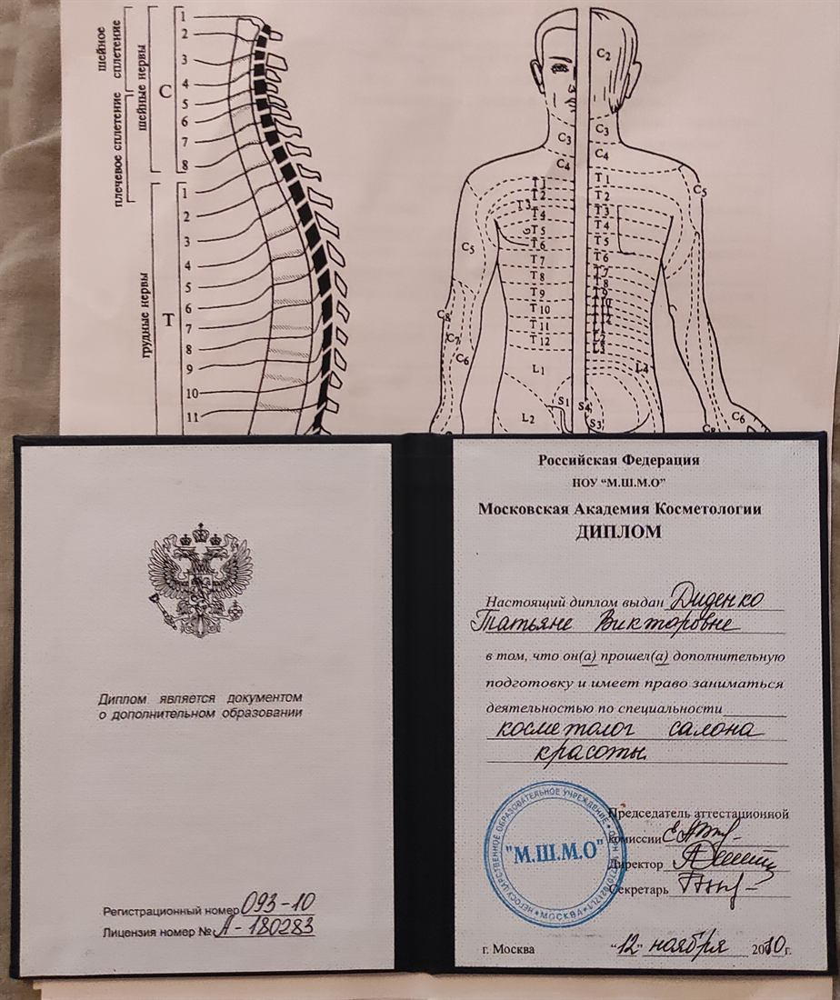
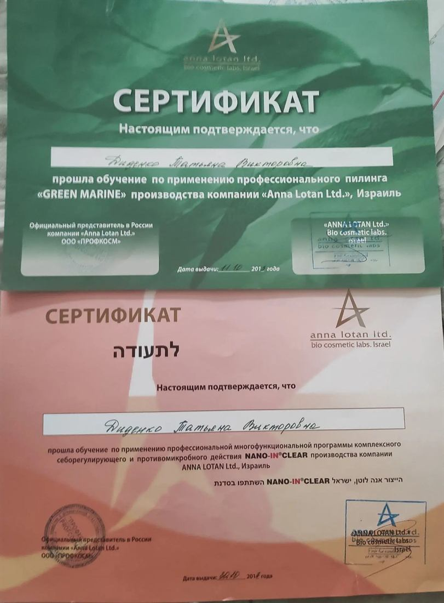
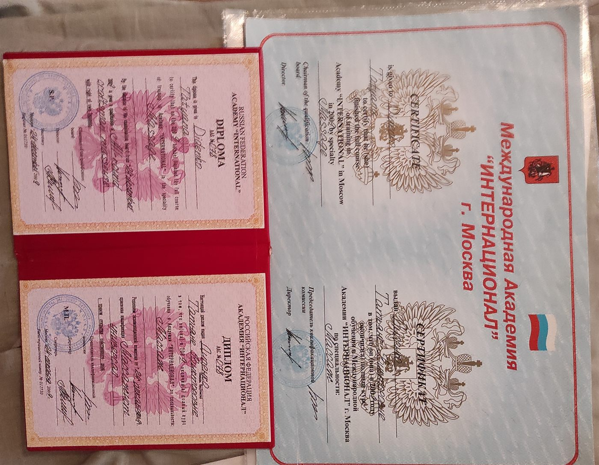
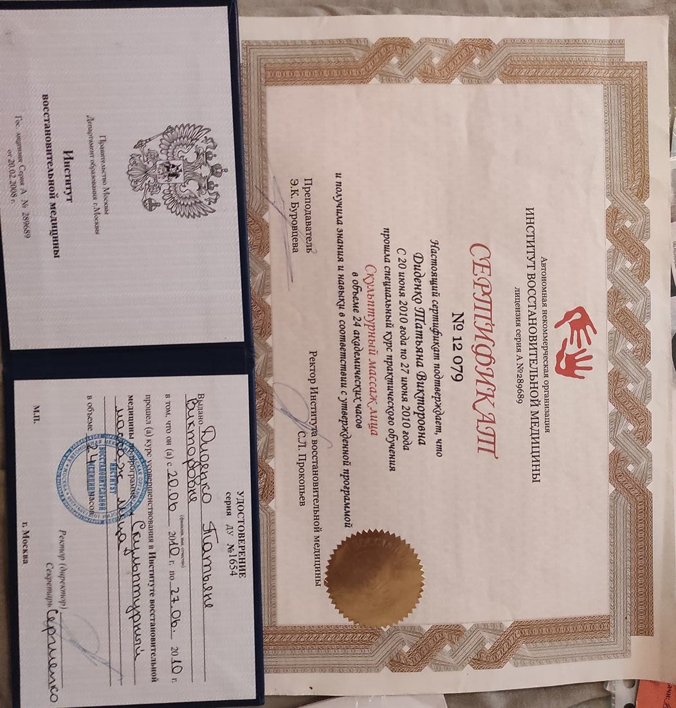
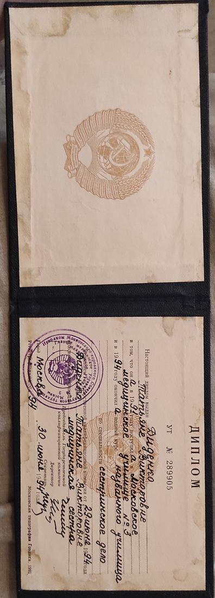
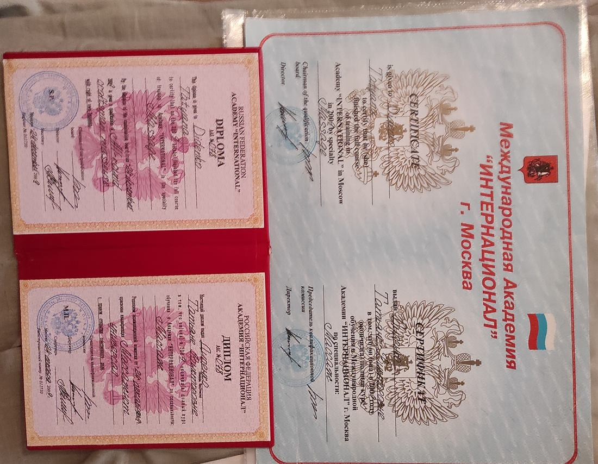
Как это выглядит
Фотографии до и после курса массажа. Нажмите на снимок, чтобы увеличить.
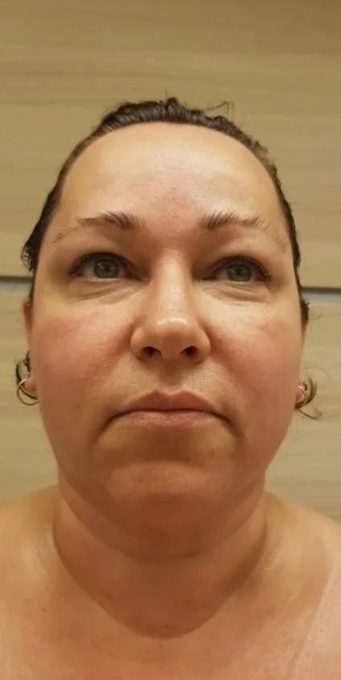
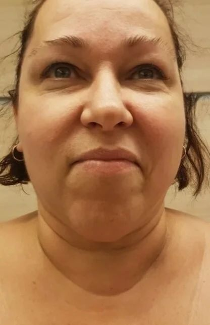
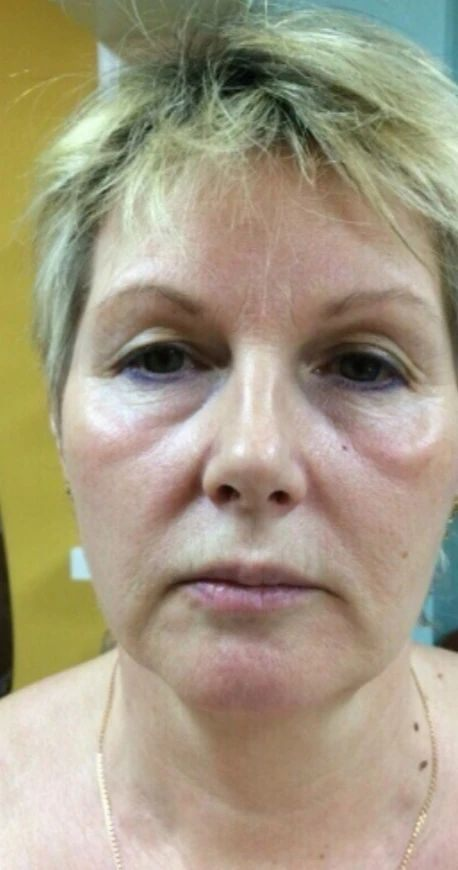
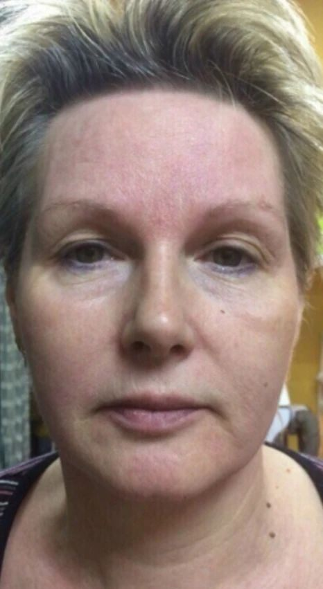
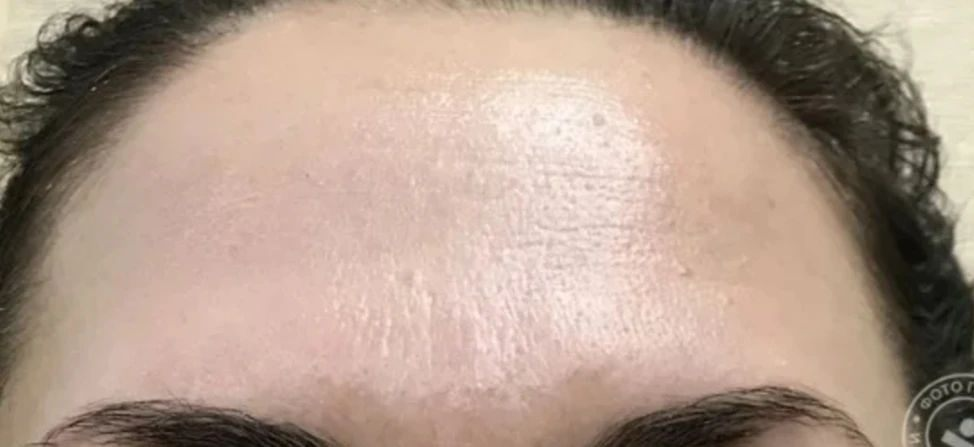
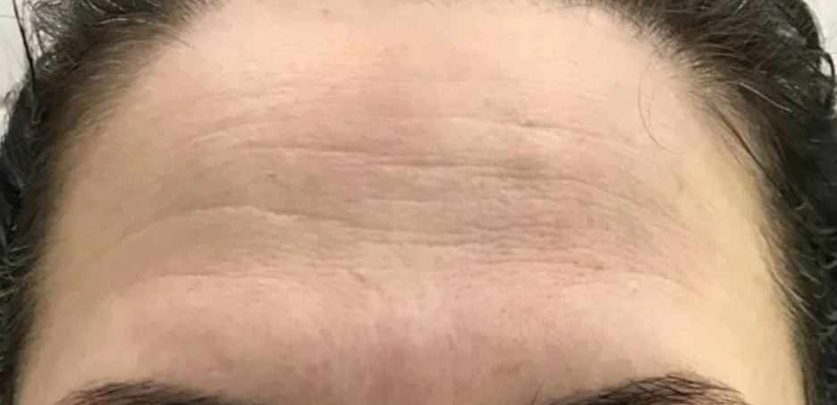
Что говорят клиенты
★★★★★«Сегодня была второй раз на массаже лица. Ну что сказать, полный восторг. Мастер очень грамотный, специалист, руки поставлены. По времени работал даже больше, чем заявленно в прайсе. Однозначно рекомендую и буду пользоваться услугами сама.»
★★★★★«Я курильщик, с проблемной кожей. Татьяна провела грамотно консультацию. Подобрала пилинг, домашний уход. Результат порадовал — буду ходить дальше и рекомендовать мастера.»
★★★★★«Делала массаж лица, очень понравилось: профессиональная техника и медицинское образование (что немаловажный фактор!). Можно проконсультироваться в подборе косметики под любой тип кожи.»
★★★★★«Сделал пилинг, результатом доволен. Жена от массажа скинула десяток лет. Собирается тоже ещё и курс пилингов пройти. Рекомендуем косметолога, работает добросовестно, виден большой опыт.»
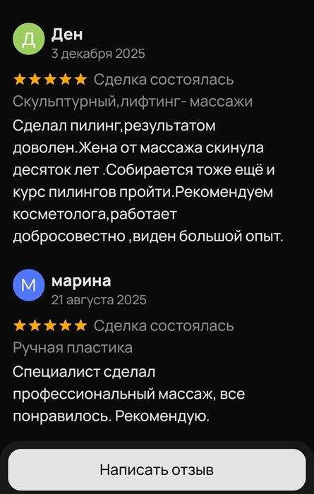
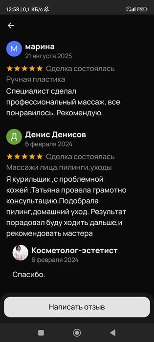
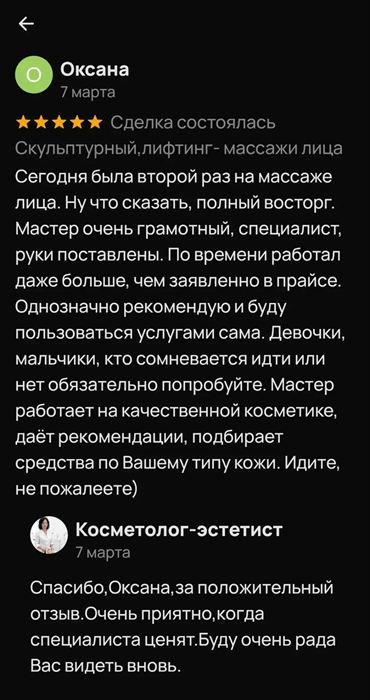
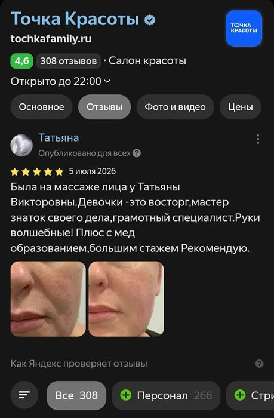
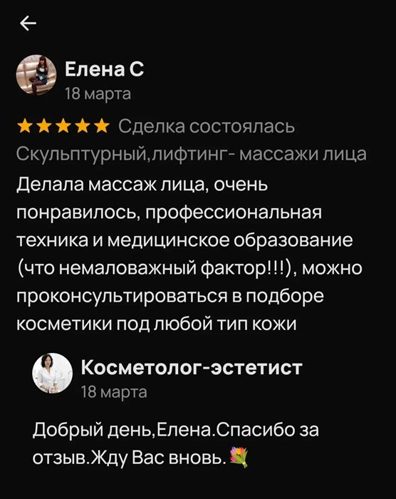
Частые вопросы
Чем безинъекционное омоложение отличается от инъекций?
Массаж воздействует на мышцы, лимфоток и кровообращение руками мастера — без препаратов, уколов и аппаратов. Нет реабилитации, риска осложнений и аллергических реакций на препараты. Результат нарастает постепенно и выглядит естественно.
Есть ли противопоказания?
Да, и к ним стоит отнестись серьёзно. Массаж лица не проводится при:
- острых воспалительных процессах на коже;
- герпесе в активной стадии;
- папилломах в зоне воздействия;
- множественных родинках;
- выраженном куперозе;
- онкологических заболеваниях;
- нарушениях свёртываемости крови;
- повышенной температуре.
Перед первым сеансом я провожу консультацию и собираю анамнез. Если есть сомнения — обязательно скажите об этом: подберём безопасный вариант или отложим процедуру. Иногда достаточно обойти отдельные зоны, а не отказываться от массажа совсем.
Сколько сеансов нужно для результата?
Заметные изменения видны уже после первого сеанса. Для закрепления результата нужен курс — от 5 сеансов, чаще всего 8–12. Периодичность подбираем индивидуально: от одного раза в неделю до 3–4 раз, в зависимости от задачи и состояния кожи. Дальше — поддерживающие сеансы.
Это больно?
Нет. Массаж лица — комфортная процедура. Возможны приятные ощущения разогрева и лёгкой чувствительности в местах зажимов, но терпеть боль не придётся: я всегда уточняю ощущения и регулирую усилие.
Сколько держится результат?
После первого сеанса свежесть и уменьшение отёчности заметны несколько дней. При курсе результат держится месяцами, при поддерживающих визитах — постоянно.
Где вы принимаете и как добраться?
Москва, Внуково, улица 2-я Рейсовая, 25. Ближайшая станция метро — Аэропорт Внуково. Приём по предварительной записи, поэтому сначала позвоните или оставьте заявку.
Записаться на сеанс
Позвоните или заполните форму — я свяжусь с вами и подтвержу время.
Оставить заявку
Заполните поля — я подготовлю текст вашего сообщения. Его можно скопировать и отправить в МАКС, либо просто позвонить. Данные никуда не отправляются с сайта и не сохраняются.
Сообщение готово
Текст скопирован в буфер обмена. Отправьте его в МАКС на номер +7 (933) 710-53-07 — или просто позвоните, так быстрее всего.
Первый шаг — просто посмотреть
Пробный сеанс стоит 2 000 ₽ и ни к чему не обязывает. После него вы сами решите, подходит ли вам методика.